Model diagnostics: distributions, uncertainty and dependence
Source:vignettes/articles/model-checking.Rmd
model-checking.RmdWhat does a diagnostic compare?
A model can estimate a plausible mean curve and still describe the observations poorly. Counts can vary more than their fitted distribution allows; residuals can retain time or spatial structure; or an apparently wide response distribution can conceal a missing group effect. Gratia now supplies consistent diagnostic calculations for several fitting packages, including ordinary linear and generalised linear models. The choice of comparison still needs a statistical question.
This article develops three questions: is the response distribution adequate, is variation between groups represented, and does serial structure remain? Checking different response distributions extends the examples to distributional parameters, censoring and weights. The grouped-survey, glmmTMB and spatial-survey articles explain their fitting choices.
These examples require the development functionality introduced after gratia 0.11.2, with R >= 4.4.0 and mgcv >= 1.9-4. The code uses mgcv and gratia, with dplyr and ggplot2 for plots. The growth example also needs the optional nlme, lme4 and gamm4 packages (gamm4 >= 0.2-7). The simulation counts are deliberately modest: 50 response draws for plot illustrations; simulation ranks use the default 249 reference draws where needed to estimate a marginal distribution. Use more and check stability before interpreting small tail departures.
There are three distinct ways to generate a comparison:
| Question | Calculation | What remains fixed? |
|---|---|---|
| Could new response errors explain these observations at the fitted effects? | Conditional response simulation or QQ reference | Fitted coefficients, effects and distribution parameters |
| Are these responses plausible after allowing uncertainty in fitted effects? | Conditional posterior predictive check | Covariance parameters usually remain fitted; uncertainty in coefficients and fitted effects is drawn together |
| What response variation would occur with new groups or fields? | Marginal joint response simulation; optionally a marginal posterior predictive check | New effects are generated from their model distribution; a posterior check also draws parameter uncertainty as supported by the fitter |
A smooth plot’s interval concerns an estimated effect. A QQ reference band concerns ordered residuals from replicated responses. A posterior predictive plot concerns replicated response distributions. QQ reference bands condition on the fitted model, without refitting it for each replicate. Use departures from these bands to locate discrepancies to investigate, rather than as a formal rejection rule.
Plot subtitles identify the method. Short captions identify
conditioning, field choices, joint simulation bands or omitted bands.
Routine pointwise bands are unlabelled. Posterior predictive captions
identify conditioning only. Use caption = "" to omit a
caption or supply your own text. Scalable QQ and worm plots use the same
labels as their ordinary counterparts.
Count variation and mean structure
Consider daily insect counts at independently sampled sites. We simulate 12,000 sites with temperature and wind as covariates. The mean count peaks at intermediate temperatures and falls with wind. The simulated sites are independent.
set.seed(301)
insects <- data.frame(temperature = runif(12000, 5, 30),
wind = runif(12000, 0, 10))
insects$count <- rpois(nrow(insects),
exp(2.5 - ((insects$temperature - 19) / 8)^2 - 0.1 * insects$wind))
count_fit <- bam(count ~ s(temperature, bs = "cr", k = 12) + wind,
data = insects, family = poisson(), method = "fREML", discrete = TRUE)A Poisson model suits the simulation: it has non-negative integer responses and variance equal to the mean. The spline estimates the temperature shape, and its penalty prevents the basis size from dictating the amount of wiggliness. In real data, unexplained heterogeneity could instead motivate a negative binomial model.
appraise(count_fit, type = "quantile", seed = 302)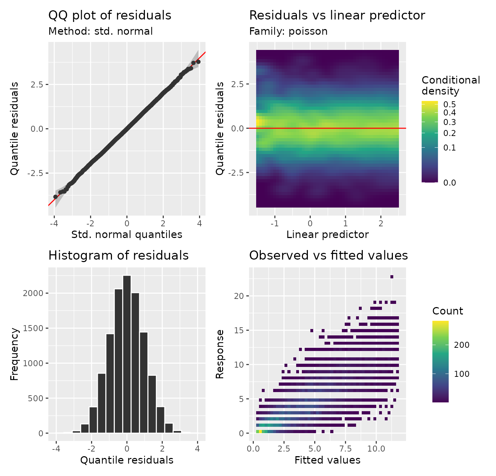
At 10,000 fitted observations appraise() switches
automatically to scalable plots. These use all observations, summarised
on grids or into quantile bins. They reveal the response distribution
without drawing 12,000 overlapping points. A straight QQ plot and
residual spread that stays roughly similar across fitted values are
consistent with the simulated Poisson model. The observed-versus-fitted
panel shows Poisson variation around the fitted means.
Put different responses on a common diagnostic scale
For a count y with fitted cumulative distribution function F, a PIT residual is a random draw between F(y-1) and F(y). Quantile residuals apply the standard-normal quantile function to that probability. This randomisation avoids artificial steps caused by integer responses. For continuous outcomes the probability is simply F(y).
u <- quantile_residuals(count_fit, type = "pit", seed = 302)
r <- quantile_residuals(count_fit, type = "quantile", seed = 302)
head(data.frame(observed = insects$count, fitted = fitted(count_fit),
probability = u, normal_score = r))
#> observed fitted probability normal_score
#> 1 6 4.8295420 0.72883035 0.6092793
#> 2 3 0.7658596 0.98856666 2.2756548
#> 3 1 0.5058428 0.80581932 0.8625928
#> 4 1 4.1404109 0.03528062 -1.8082909
#> 5 5 4.3879965 0.61980026 0.3049562
#> 6 5 4.3668547 0.64330424 0.3673050Under a suitable fitted distribution these probabilities should be approximately uniform, and their normal scores approximately standard normal. A normal reference for quantile residuals is justified by this transformation. Traditional Poisson deviance residuals do not have exactly a normal distribution.
qq_plot(count_fit, type = "deviance", method = "simulate",
n_simulate = 50, seed = 303)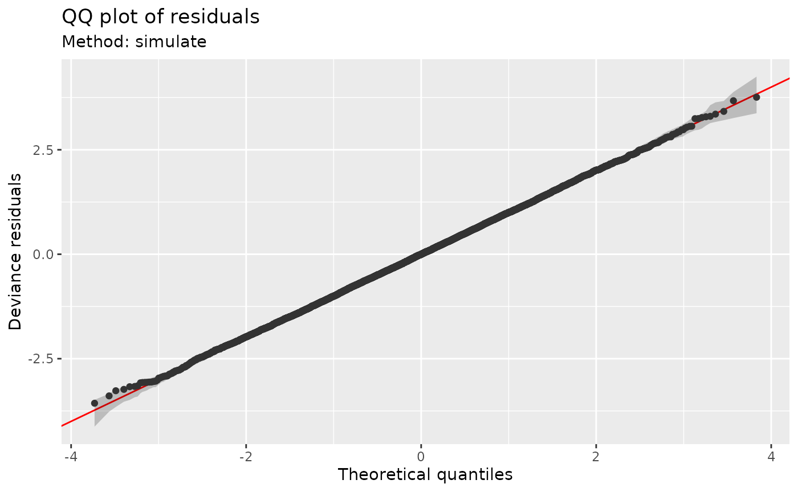
Here the reference comes from responses simulated at the fitting
covariates. Each observation’s fitted mean enters its simulated
response. method = "uniform" instead averages ordered
residuals obtained from the fitted inverse CDF.
method = NULL chooses this method for most independent GAMs
and simulation for Tweedie models to avoid costly numerical quantile
inversion. An explicit method overrides that choice where supported. A
worm plot subtracts reference quantiles from observed ordered
residuals.
scalable_worm_plot(count_fit, type = "quantile", qq_bins = 80, seed = 302)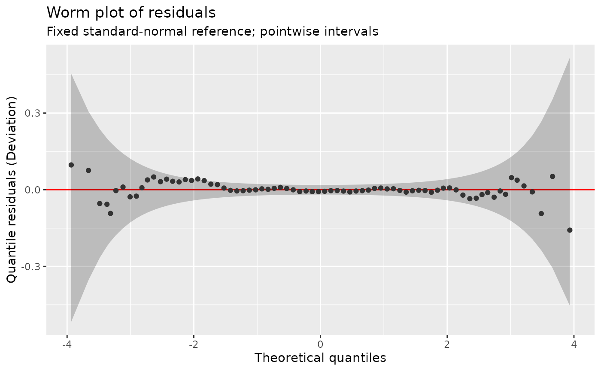
Look for what the QQ plot could miss
A response distribution can look plausible when observations are pooled while systematic lack of fit remains at some covariate values. Remove the curved relationship to temperature to see this:
linear_fit <- glm(count ~ temperature + wind, data = insects,
family = poisson())
scalable_residuals_covariate_plot(linear_fit,
covariates = c("temperature", "wind"), type = "pearson")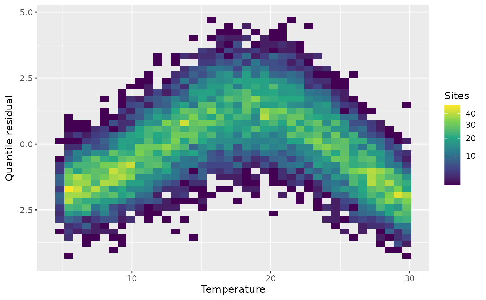
The curved residual mean against temperature shows where the linear
effect misses the response shape. Pearson residuals account for the
Poisson mean–variance relationship. Response residuals also target the
mean but retain the count units. For a broader distributional check, use
type = "quantile" or type = "pit" to examine
location, spread and tails against each covariate. Non-Gaussian deviance
residuals need not have zero conditional mean, so their mean curve need
not lie on zero even when the model fits.
Both versions default to smooth = NULL, which fits the
residual mean trend only for groups with at most 20,000 eligible
observations. Use smooth = TRUE to fit trends for larger
groups, or smooth = FALSE to omit them. The threshold is
applied separately within each response, family component and
by group.
The ordinary version shows individual residuals. It is useful for smaller teaching examples; both versions use all eligible observations:
small_insects <- insects[seq_len(500), ]
small_fit <- gam(count ~ temperature + wind, data = small_insects,
family = poisson(), method = "REML")
residuals_covariate_plot(small_fit, covariates = "temperature", type = "pearson")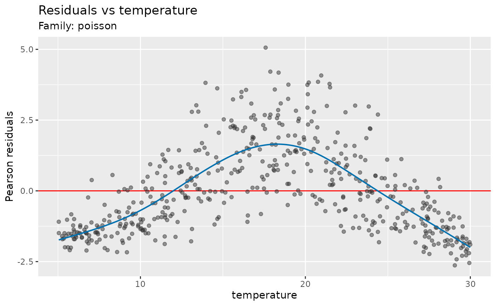
By default each distinct model covariate gets one panel. To select
covariates through a smooth, supply its exact label from
smooths(count_fit):
smooths(count_fit)
#> [1] "s(temperature)"
scalable_residuals_covariate_plot(count_fit, terms = "s(temperature)",
type = "quantile", seed = 302)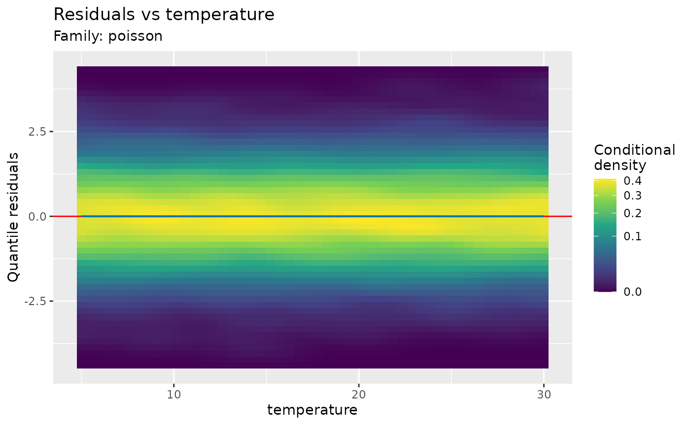
For tensor products use labels such as
"te(temperature,wind)", without adding spaces.
terms accepts smooth labels only, while
covariates can also select linear predictors or covariates
absent from the model. Supply the original fitting data for
omitted covariates or when raw transformed covariates are unavailable.
For a categorical covariate, the functions show residual boxplots and
group means; by = "group" separates patterns into group
facets.
Separate panels can miss a remaining interaction. Here the mean contains a product of two independent, centred covariates. Averaging over either covariate hides the interaction in the other covariate’s residual mean:
set.seed(306)
interaction_data <- data.frame(x = runif(4000, -1, 1), z = runif(4000, -1, 1))
interaction_data$y <- 4 * interaction_data$x * interaction_data$z + rnorm(4000)
additive_fit <- gam(y ~ s(x) + s(z), data = interaction_data, method = "REML")
scalable_residuals_covariate_plot(additive_fit, covariates = c("x", "z"),
pairs = list(c("x", "z")), bins = c(10, 10), type = "pearson")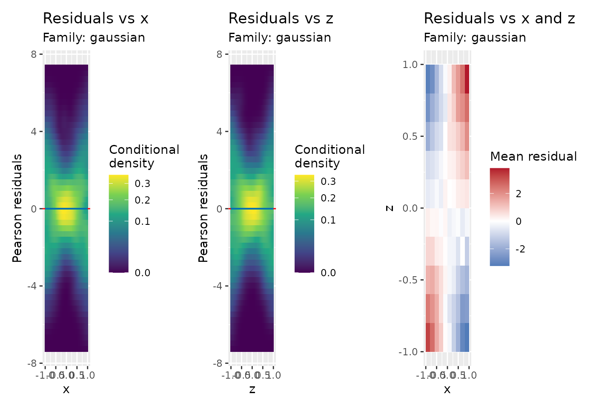
The joint map shows the mean residual within each occupied covariate
cell. Opposite corners have residuals with the same sign, suggesting
that the two covariates need to enter the mean together. Cells with
fewer than min_n observations are blank. Use
statistic = "sd" to inspect changes in spread instead; this
is particularly useful with quantile or PIT residuals. Joint maps are
descriptive summaries, without significance tests. Correlated covariates
can share residual patterns, so check a revised model before attributing
the pattern to one particular effect. For a fitted smooth, a remaining
curve can also motivate increasing its basis dimension k
and checking the refitted model.
Choose compact displays without changing the question
scalable_residuals_linpred_plot(count_fit, type = "quantile", seed = 302)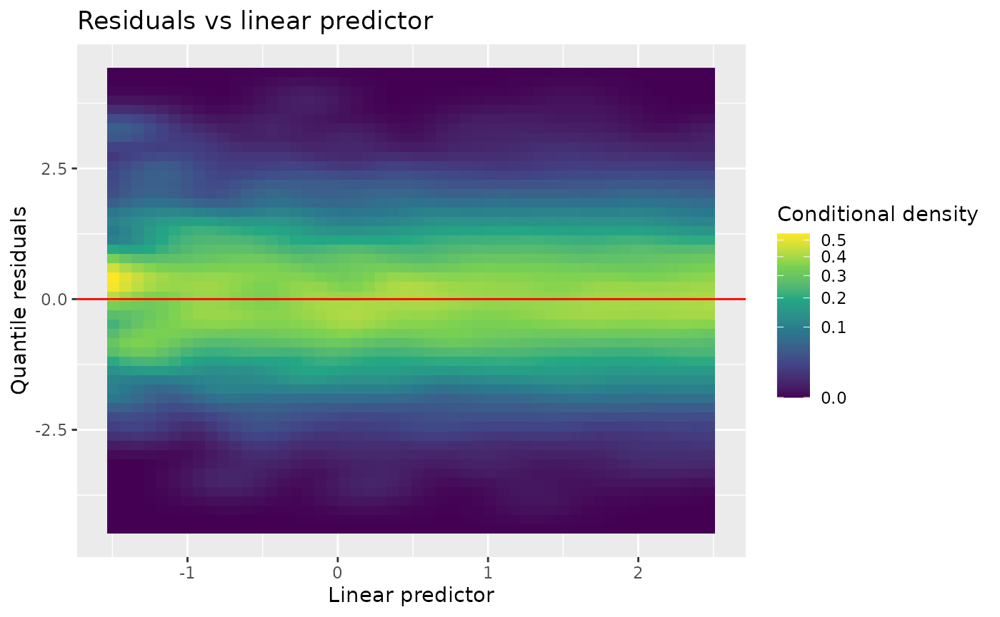
scalable_residuals_linpred_plot(count_fit, type = "quantile", seed = 302,
density_method = "histogram")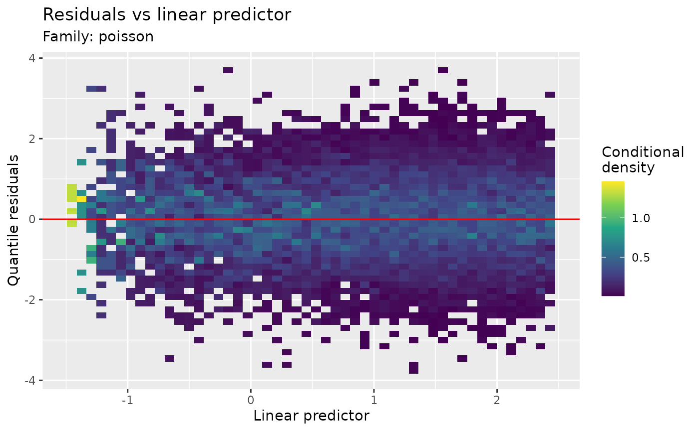
scalable_observed_fitted_plot(count_fit)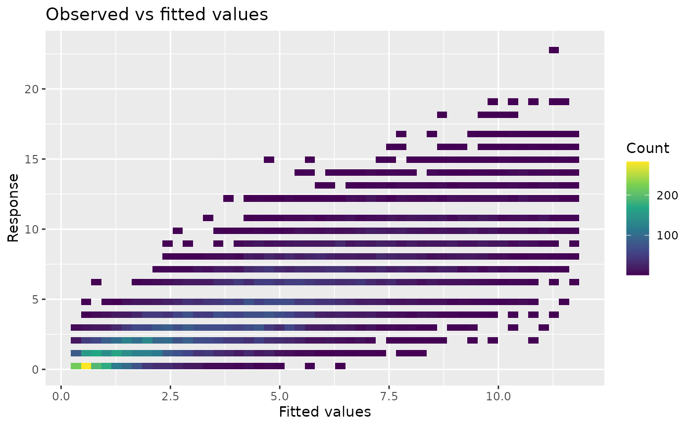
scalable_residuals_hist_plot(count_fit, type = "quantile", seed = 302)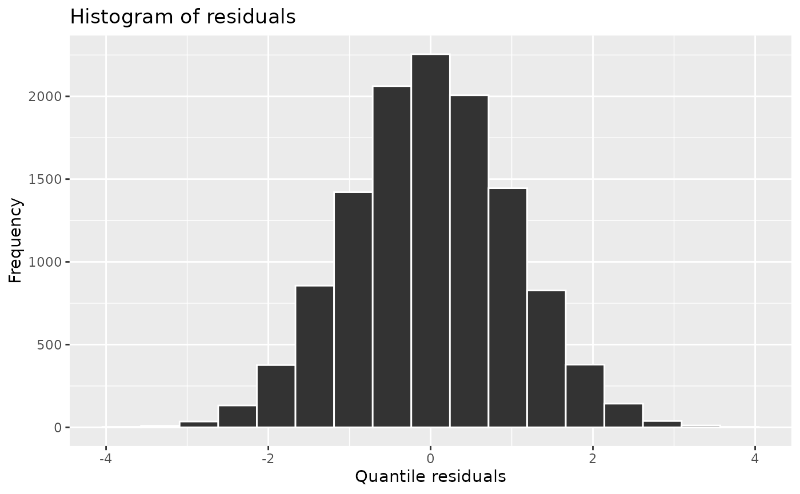
The default residual heatmap uses a kernel estimate of density at
each predictor value. Its square-root colour scale keeps low-density
regions visible. The histogram option uses unsmoothed bins;
bandwidth controls smoothing on both axes.
Observed-versus-fitted count heatmaps remain unsmoothed. The scalable
functions also include scalable_qq_plot(); ordinary plots
remain available with appraise(..., scalable = FALSE), and
scalable_threshold changes the automatic cutoff. Plot
summaries are compact, but simulation still generates a response for
every observation. QQ calculations average inverse-CDF draws as they are
generated. When simulated references exceed
options(gratia.diagnostics.max_cells = 1e7), exact
quantiles use temporary files, reducing memory at the cost of disk
access. One response vector and the reference output still need to fit
in memory. Marginal simulation ranks use
gratia.diagnostics.marginal_draws (default 249, minimum
19); increase it and check stability, especially in the tails.
posterior_predictive_plot(count_fit, n = 50, seed = 304, scalable = TRUE)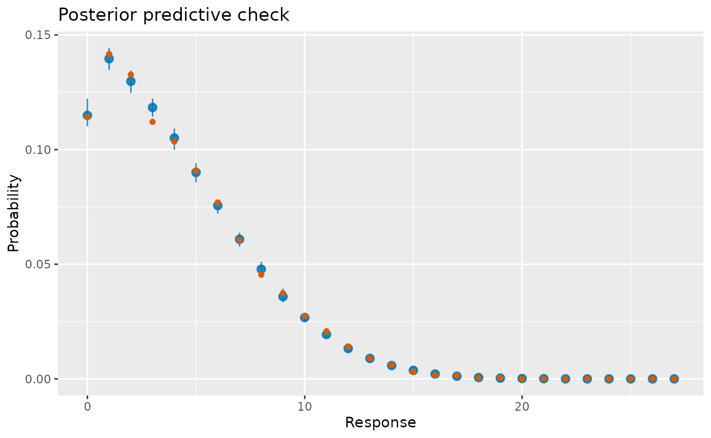
The discrete posterior predictive check shows observed probabilities
and the median and 90% intervals of replicated probability masses. It
draws approximate coefficient uncertainty as well as response variation.
Large datasets are summarised on a common grid; more than 512 distinct
discrete response values use 512 labelled bins. These bars concern
variation across whole replicated datasets. They are not confidence
intervals on the fitted mean.
appraise(ppcheck = TRUE, n_ppc = 50) replaces the residual
histogram with this comparison. Offsets supplied as fitting arguments
are retained in posterior response draws. Explicit seeds preserve the
caller’s random-number state; coefficient draws and response draws use
separate streams.
Repeated measurements: fixed effects, fitted groups and new groups
The Orthodont data contain dental measurements on 27 children at ages 8, 10, 12 and 14. Each child contributes several observations, so their values can share an individual growth trajectory. A Gaussian linear mixed model with sex-specific age slopes and correlated child intercepts and slopes is a useful starting point. With only four occasions per child, very detailed individual curves are not supported.
library("nlme")
library("lme4")
library("gamm4")
data("Orthodont", package = "nlme")
growth <- transform(Orthodont, age_c = age - 11)
growth_fit <- lme(distance ~ Sex * age_c, random = ~ age_c | Subject,
data = growth, method = "REML")
summary(growth_fit)$tTable
#> Value Std.Error DF t-value p-value
#> (Intercept) 24.9687500 0.48600071 79 51.375954 1.812711e-62
#> SexFemale -2.3210227 0.76141677 25 -3.048295 5.375052e-03
#> age_c 0.7843750 0.08599951 79 9.120691 5.654752e-14
#> SexFemale:age_c -0.3048295 0.13473534 79 -2.262432 2.641752e-02The age coefficient describes mean growth in the reference sex, and the interaction describes a difference in age slopes. The fitted random effects describe departures for these children. The positive fitted age slopes describe growth between ages 8 and 14.
qq_plot(growth_fit, type = "quantile", conditioning = "conditional", seed = 305)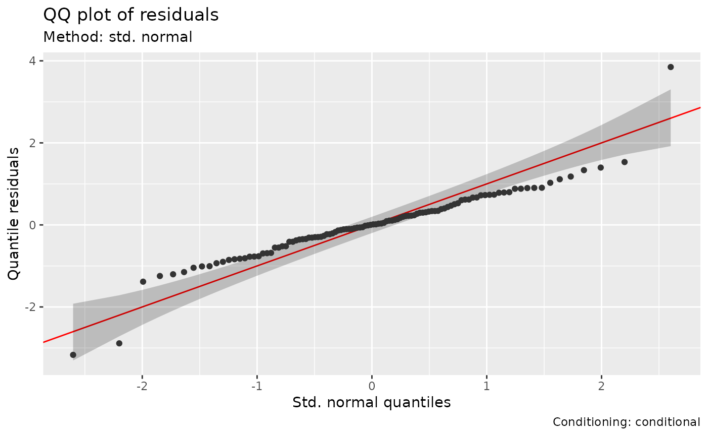
qq_plot(growth_fit, type = "quantile", conditioning = "marginal",
n_simulate = 50, seed = 305)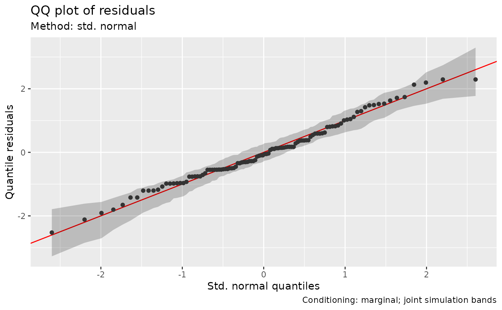
The conditional comparison holds each child’s fitted intercept and slope fixed and checks remaining measurement variation. The marginal comparison generates new child trajectories. All four measurements of a simulated child share its new intercept and slope; the simulator retains their covariance. Setting those effects to zero would give the mean trajectory, not this marginal distribution. In this fit the conditional scores have a compressed centre and one large positive tail departure. The marginal plot averages over different child trajectories and is closer to its reference. Investigate the observation responsible for the largest conditional score alongside that child’s trajectory.
The marginal QQ reference must preserve the shared effects. Gratia uses joint response draws for its bands, rather than bands derived for independent scores.
The QQ plot pools the ordered residuals. To check the shared child effects, also plot trajectories or residuals against age, grouped by child: systematic patterns within children can be hidden by pooling.
posterior_predictive_plot(growth_fit, conditioning = "conditional", n = 50,
seed = 306)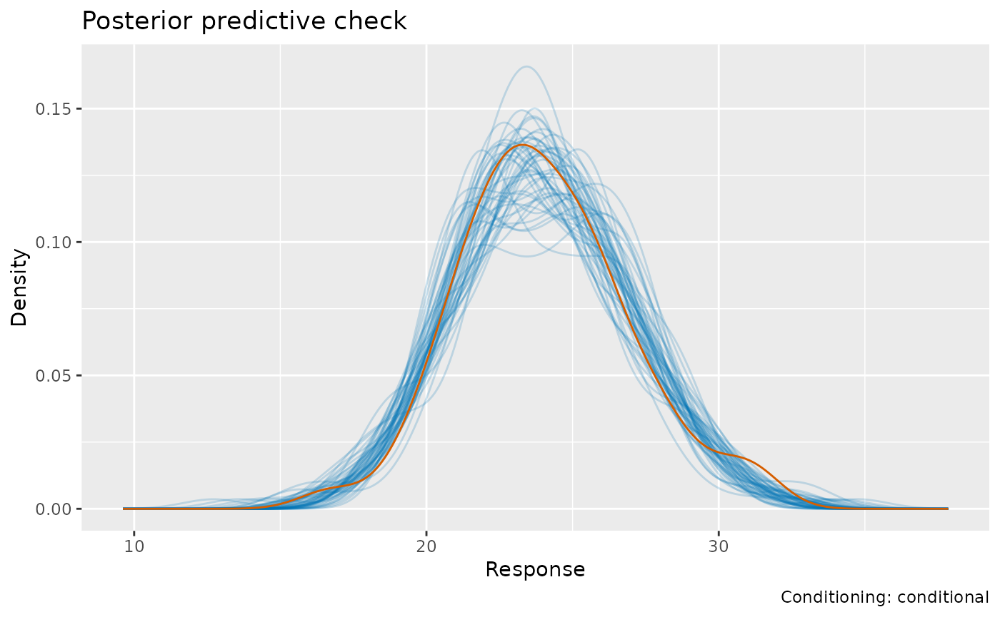
posterior_predictive_plot(growth_fit, conditioning = "marginal", n = 50,
seed = 306)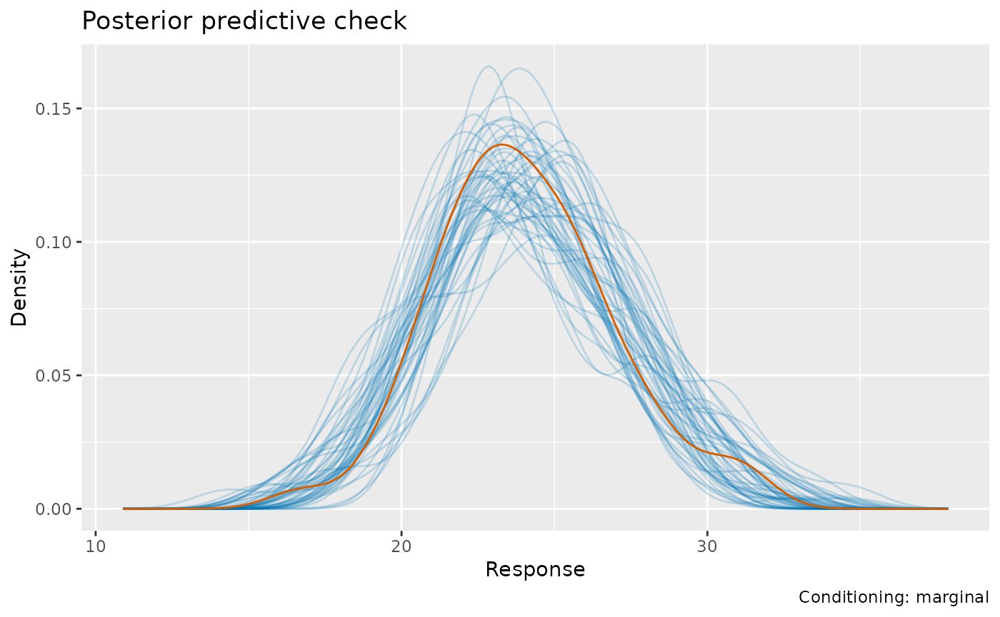
The conditional posterior predictive check draws uncertainty in the fitted child effects together with fixed effects, allowing more response variation than the conditional QQ reference at fixed effect estimates. The marginal posterior predictive check draws new effects from their fitted population covariance as well. Covariance parameters remain at fitted values in these nlme approximations. The density overlays pool the measurements across ages and children; use the trajectory plots to examine where that variation occurs.
Apply the same distinction to other mixed-model fits
growth_lmer <- lmer(distance ~ Sex * age_c + (age_c | Subject),
data = growth, REML = TRUE)
appraise(growth_lmer, conditioning = "conditional", type = "quantile", seed = 305)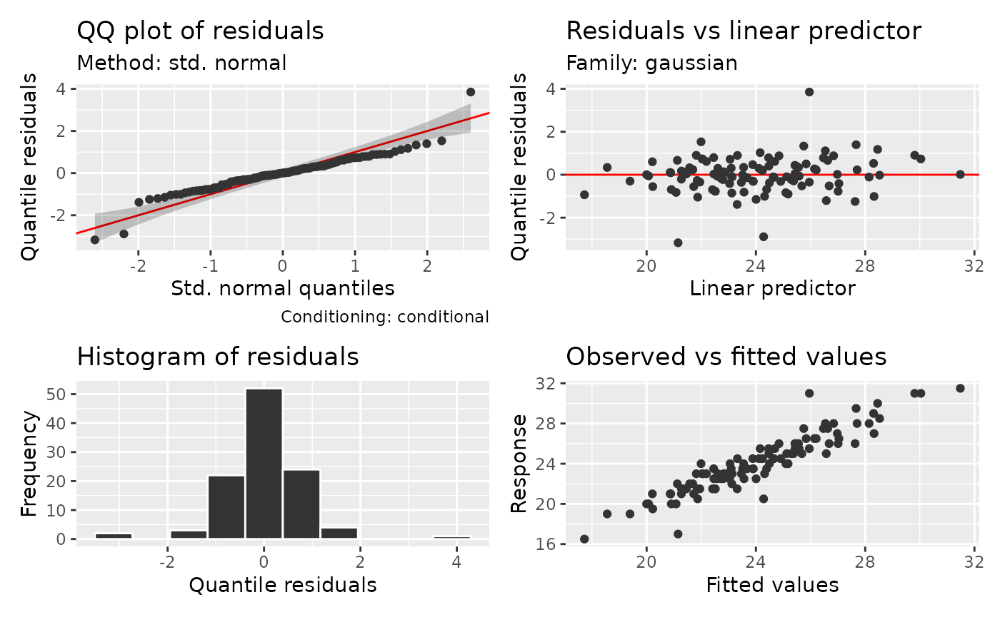
growth_smooth <- gamm4(distance ~ Sex + s(age, k = 4),
random = ~(1 | Subject), data = growth)
draw(growth_smooth)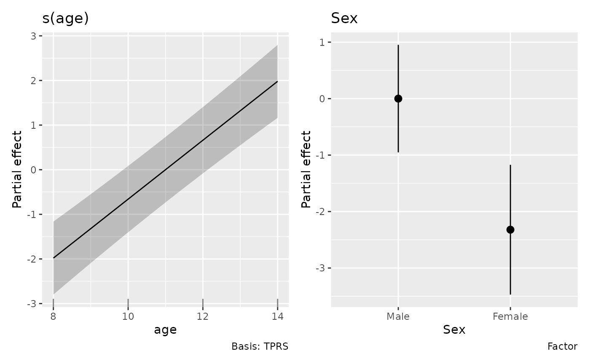
variance_comp(growth_smooth)
#> # A tibble: 3 × 5
#> .component .variance .std_dev .lower_ci .upper_ci
#> <chr> <dbl> <dbl> <dbl> <dbl>
#> 1 Subject:(Intercept) 3.27 1.81 NA NA
#> 2 s(age) 0 0 NA NA
#> 3 scale 2.05 1.43 NA NAThe direct lmer() fit answers the same linear-growth
question. The gamm4() fit instead asks whether a shared
population age curve is curved, with child intercepts accounting for
repeated observations. It can be passed directly to gratia.
draw(), predictions, derivatives and fitted-value draws
describe its population GAM component; group terms specified in
random are excluded from those calculations. Variance
components include both smooth penalties and native group effects, with
missing interval bounds where the fit provides none.
appraise(growth_smooth, conditioning = "conditional", seed = 307)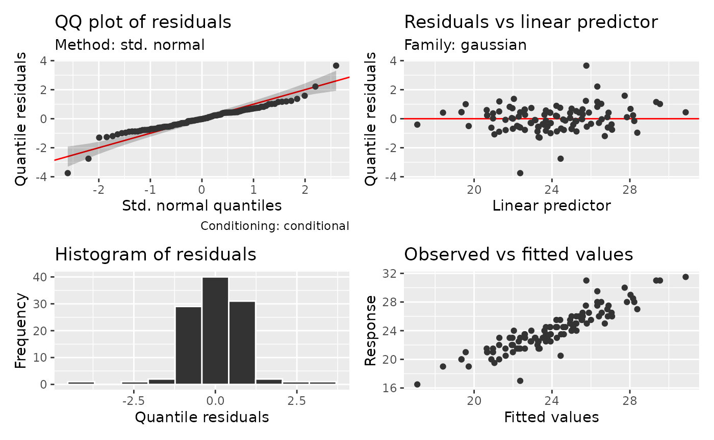
posterior_predictive_plot(growth_smooth, n = 50, seed = 307)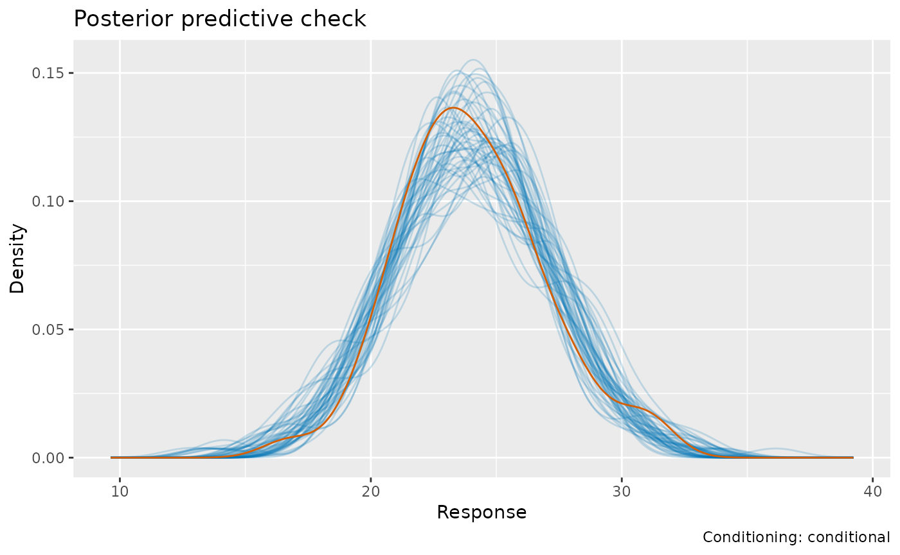
population_grid <- data.frame(age = seq(8, 14, length.out = 30),
Sex = factor("Female", levels = levels(growth$Sex)))
fitted_values(growth_smooth, data = population_grid) |> head()
#> # A tibble: 6 × 8
#> .row age Sex .parameter .fitted .se .lower_ci .upper_ci
#> <int> <dbl> <fct> <chr> <dbl> <dbl> <dbl> <dbl>
#> 1 1 8 Female mean 20.7 0.615 19.5 21.9
#> 2 2 8.21 Female mean 20.8 0.611 19.6 22.0
#> 3 3 8.41 Female mean 20.9 0.607 19.7 22.1
#> 4 4 8.62 Female mean 21.1 0.604 19.9 22.3
#> 5 5 8.83 Female mean 21.2 0.601 20.0 22.4
#> 6 6 9.03 Female mean 21.4 0.599 20.2 22.5Diagnostics and response simulations for gamm4 now
default to the full conditional mixed model, including fitted child and
smooth effects. Posterior response draws default to uncertainty in those
fitted effects. Explicit conditioning = "gam_component"
selects the extracted GAM calculations, and is required for posterior
response draws at new data or supplied coefficient draws.
conditioning = "marginal" generates new mixed-model
effects; for gamm4 this includes the spline effects represented as
random effects, so it asks a different question from new measurement
errors around a fixed age curve. The existing gamm()
response simulator still defaults to its GAM component; request
full-model conditioning explicitly there. See gamm4_support
for covariance and sampling restrictions. Use fitting-package prediction
on the mer component for predictions conditional on a
particular child’s effects.
Serial observations: a response model or a fitting correction?
Time order carries information that a histogram discards. The
following simulation represents regularly spaced measurements from four
independent monitoring series with a slowly changing mean and Gaussian
AR1 errors. We supply the simulation’s known correlation, 0.6, through
rho; BAM treats it as fixed during fitting.
set.seed(308)
monitor <- expand.grid(time = seq_len(120), station = factor(seq_len(4)))
monitor$start <- monitor$time == 1
monitor$measurement <- 2 + sin(monitor$time / 25) +
unlist(lapply(seq_len(4), function(i)
as.numeric(arima.sim(list(ar = 0.6), n = 120, sd = 0.5))))
serial_fit <- bam(measurement ~ s(time, bs = "cr", k = 12), data = monitor,
rho = 0.6, AR.start = start, discrete = TRUE)
qq_plot(serial_fit, method = "simulate", n_simulate = 50, seed = 309)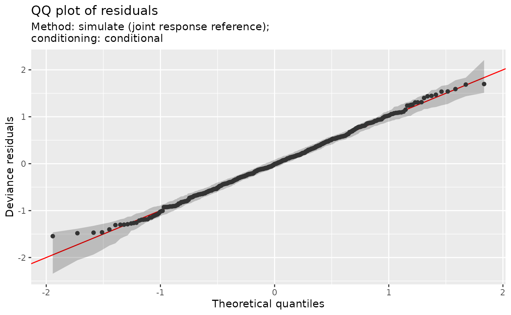
residual_correlation_plot(serial_fit, lag_max = 15)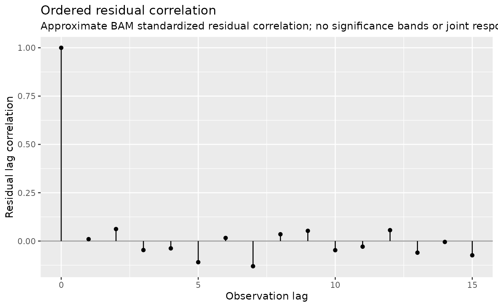
residual_correlation(serial_fit, lag_max = 3)
#> # A tibble: 4 × 3
#> lag correlation n_pairs
#> <int> <dbl> <int>
#> 1 0 1 480
#> 2 1 0.00981 476
#> 3 2 0.0620 472
#> 4 3 -0.0465 468Gaussian identity-link BAM defines a joint response distribution.
Simulated references preserve the AR1 covariance and start a fresh
series at each AR.start. The ordered check uses the stored
standardised residuals by default and can reveal correlation remaining
after adjustment. There are no significance bands based on independence.
The companion table reports the correlation and number of usable
observation pairs at each lag; fewer pairs are available at larger lags.
Lags count observation positions, not elapsed time. Specify series, sort
the fitting data, and consider a fitting-package covariance model
appropriate to irregular time intervals.
For counts, BAM with discrete = TRUE applies nonzero
rho to its working residuals, the quantities used
during iterative fitting. This is a generalised estimating equations
(GEE) approximation. It does not define a unique joint count
distribution. We generate the next dataset from a latent correlated
process, then use BAM’s working correction when fitting its mean.
set.seed(310)
monitor$count <- rpois(nrow(monitor), exp(1 + monitor$measurement / 2))
working_fit <- bam(count ~ s(time, bs = "cr", k = 12), data = monitor,
family = poisson(), discrete = TRUE, rho = 0.6, AR.start = start)
qq_plot(working_fit, type = "quantile", seed = 311)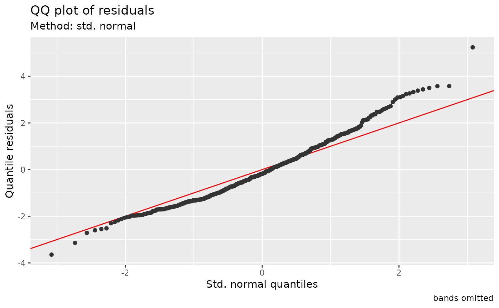
residual_correlation_plot(working_fit, type = "working.standardized", lag_max = 15)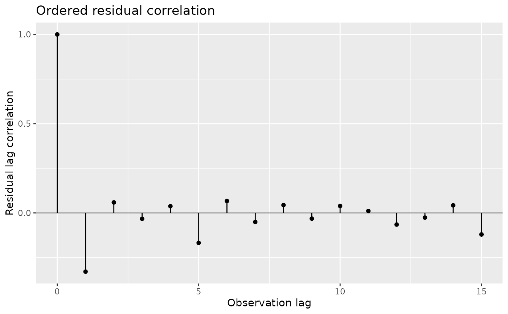
The marginal Poisson probabilities still locate each count in its
fitted univariate distribution. The QQ plot omits dependence bands. A
default QQ plot of traditional residuals uses a pooled marginal
reference; it neither assumes independence nor silently switches to a
normal reference. Comparing whitened working residuals at different lags
is an approximate serial check. type = "standardized"
instead uses mgcv’s stored std.rsd, which is not
necessarily the weighted working residual used during non-Gaussian
fitting. Here the large negative lag-one correlation after whitening
suggests that the supplied working correction is too strong. We supplied
the latent Gaussian correlation, whereas the correction acts on working
residuals from the count model. These correlations can differ. The
upper-tail departure in the QQ plot also reflects variation from the
latent process that the Poisson distribution omits. Use these two checks
to examine the working correction and the response distribution
separately.
qq_plot(working_fit, method = "simulate"), joint
simulate() and posterior_predictive_plot() are
explicitly unsupported. The same restriction applies to nonidentity
Gaussian and extended-family working AR1 BAM fits, and to correlated
non-Gaussian PQL gamm() fits. Approximate PQL checks
without residual working correlation remain available. A generative
non-Gaussian mixed model with a justified temporal covariance, for
example in glmmTMB, is an alternative when joint predictive simulation
is the scientific aim. It requires a choice of temporal covariance, such
as AR1 effects on the log mean.
Choose checks for the part of the model you want to examine
Use PIT or quantile checks for response distributions, predictor plots for mean and variance structure, and ordered or spatial displays for dependence. Conditional and marginal comparisons can disagree because they ask different questions. The sdmTMB article develops four choices for fitted fields, including one posterior field draw and integration over fitted-field uncertainty; these are separate from simulating new fields or drawing parameter uncertainty.
diagnostic_support
lists the precise supported families and conditioning modes. Unsupported
cases remain errors: quasi families have no response probability law,
censored posterior checks need an observation mechanism, and a working
correlation alone is insufficient for a joint simulator. Models with
independent responses use analytic uniform/normal score references where
available. Dependent responses use joint simulation for bands where
possible; otherwise the plot explains their omission.